05Product design & build · Fictional e-commerce concept
A drinks shop you can walk into.
Quench is an encyclopedia of what the world drinks that is also a shop. You travel by map, wander a market, step inside a drink and take it apart into the ingredients you can buy.
Quench is fictional. Nothing is sold or shipped, and prices are illustrative.
Live · hosted on this portfolio · /demos/quench
- Project
- Self-initiated e-commerce concept
- Role
- Concept, direction & review
- Deliverable
- Responsive static store with interactive tools

The brief
Can an online shop feel like a place you visit, and still be easy to search and buy from?
Most stores are grids of products. Quench sells the ingredients and tools for drinks from around the world, so it also has to explain them: where a drink comes from, how it is made and what is in it. That is a lot of reading for a shop, and a lot of shopping for a reference book.
- 01Make browsing feel like travelling, not scrolling a grid
- 02Turn every encyclopedia entry into something you can buy from
- 03Keep search, filters and checkout plain and fast
- 04Look nothing like the other projects in this portfolio
Writing
Facts in the entry, jokes in the margin.
The first idea sold alien weapons, and every line was a joke. Quench keeps the playfulness but moves it into hand-written notes, so the entries can stay factual and sourced.
Illegal in 14 star systems. Available in yours.
The whole world, poured.
Explore the atlas
Take it apart
The verb changed from browsing to doing: a drink opens into its ingredients, and each ingredient can go in the bag.
The dots are bitters. You knew that.
Pisco is a grape brandy made in both Peru and Chile, and both countries claim it as their own, along with this cocktail.
The note is allowed to joke. The entry is not.
Every entry is a draft until it is checked
Drafts carry a visible “facts are being checked” badge. An entry only becomes verified after its facts are traced to sources.
Local names, in their own scripts
قهوة عربية, 抹茶, ቡና, φραπέ: each drink is introduced by the name people use where it comes from.
Respect who is reading
Zero-proof mode removes alcohol from every page and swaps in alcohol-free rooms. The age check appears only when alcohol is in the bag.
Forty-seven drinks from eight markets
- Arabic coffee
- Karak chai
- Turkish coffee
- Ayran
- Sahlab
- Mango lassi
- Masala chai
- Nimbu pani
- Noon chai
- Iced matcha latte
- Bubble tea
- Sake
- Horchata
- Agua de jamaica
- Mate
- Pisco sour
- Caipirinha
- Champurrado
- Tepache
- Espresso
- Greek frappé
- Chocolate a la taza
- Glühwein
- Moroccan mint tea
- Buna
- Bissap
- Rooibos
- Egg cream
- Sweet tea
- Old fashioned
- Flat white
- ʻOtai
- Lemon, lime & bitters
- Gongfu tea
- Makgeolli
- Yuenyeung
- Sugarcane juice
- Falooda
- Jallab
- Agua de tamarindo
- Irish coffee
- Kvass
- Tej
- Homemade ginger beer
- Hot apple cider
- Australian iced coffee
- Fresh coconut
Design
Loud at the front, quiet at the back.
Where people explore, the site is immersive: a night map, region markets and a full-screen room for each drink. Where people read, compare and pay, it turns into a calm white page.
#1A1714Night map and structure#D9622BCoffee rooms and the Middle East#F2CF4ATea rooms and East Asia#E9849FShakes, lassi and South Asia#C2ABD9Aguas frescas and Latin America#8FD3B6Sodas, ferments and Europe#7A4128Hot chocolate only#5B1D3BCocktails only#A3322AWine, beer and sake only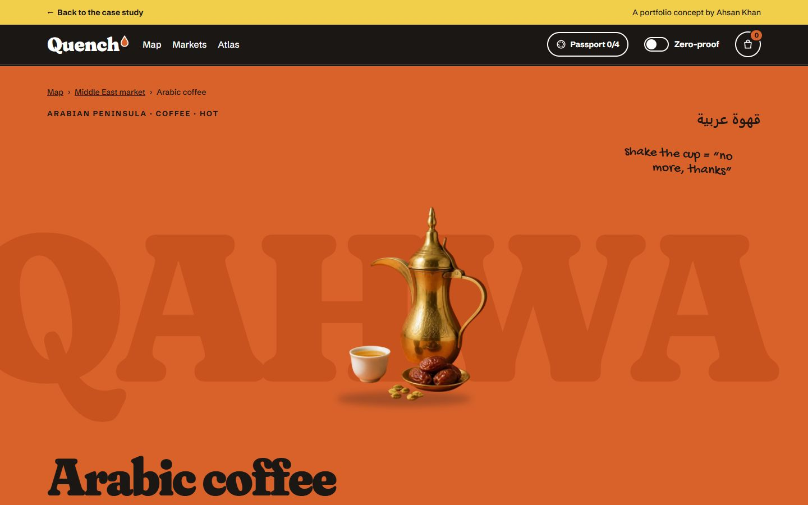
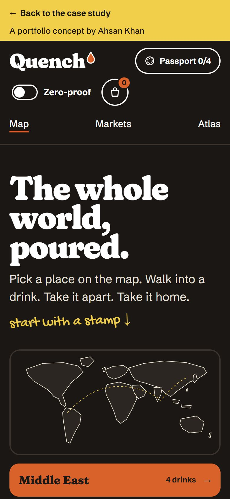
One colour per category, everywhere
The colour behind a drink in its photo is the colour of its room and its market, so coffee always feels like coffee.
A photo for what it looks like, a drawing for what is inside
Every drink has one studio photo made with the same recipe. Ingredients, steps and passport stamps are drawn in one ink line.
Take it apart
Each drink room breaks into its ingredients on request. Bought items show a price; the rest say where you already have them: your fridge, the tap.
Development
A reference book with a checkout.
A static Astro site where every drink is one Markdown file checked by a schema. Small TypeScript modules add the take-apart rooms, the markets, the Atlas filters, the bag and the passport.
- Astro
- TypeScript
- Content collections
- Hand-written CSS
- Inline SVG illustration
- localStorage
- sharp
What it does
- Forty-seven drink rooms that take apart into buyable ingredients
- A world map with eight region markets and a passport that stamps as you travel
- Zero-proof mode across the site, with alcohol-free swaps
- Atlas filters by market, category, temperature and caffeine, with search, sort and a list view
- A bag and checkout with an age check that appears only for alcohol
How it was checked
- 59 pages built from one schema; a drink with a missing field fails the build
- Fonts and images are served with the site, with half-size images for small screens
- No horizontal scroll at phone width on any page
- Motion switches off under reduced motion
- Nothing is sent anywhere: bag, passport and settings stay in the browser
- Every entry stays marked as a draft until its facts are checked
Evolution
From a weapons store to a drinks shop.
It began as a shop for alien weapons. Six versions later it sells drinks, and it went from a magazine to a place you walk into.
Void Bazaar
“Illegal in 14 star systems. Available in yours.”
An alien black market for weapons and cars, priced in gems. Fun, but it shared its dark, deadpan look with Dr. Mara.
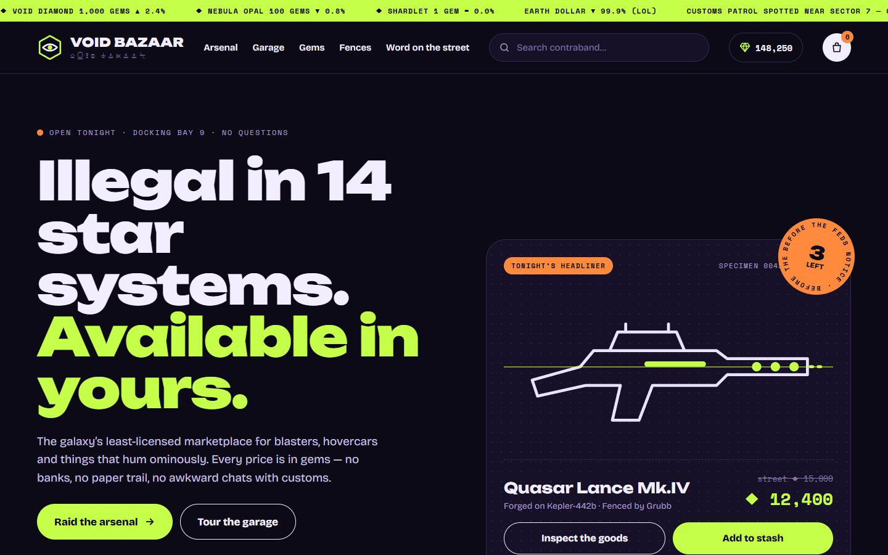
Eight directions
The same store drawn eight ways: pulp ads, an auction house, a field manual, a 90s desktop, an alien-made shop, a game inventory, a riso zine and a fashion lookbook. The lookbook won, but its products looked unreal.
- Eight style boards
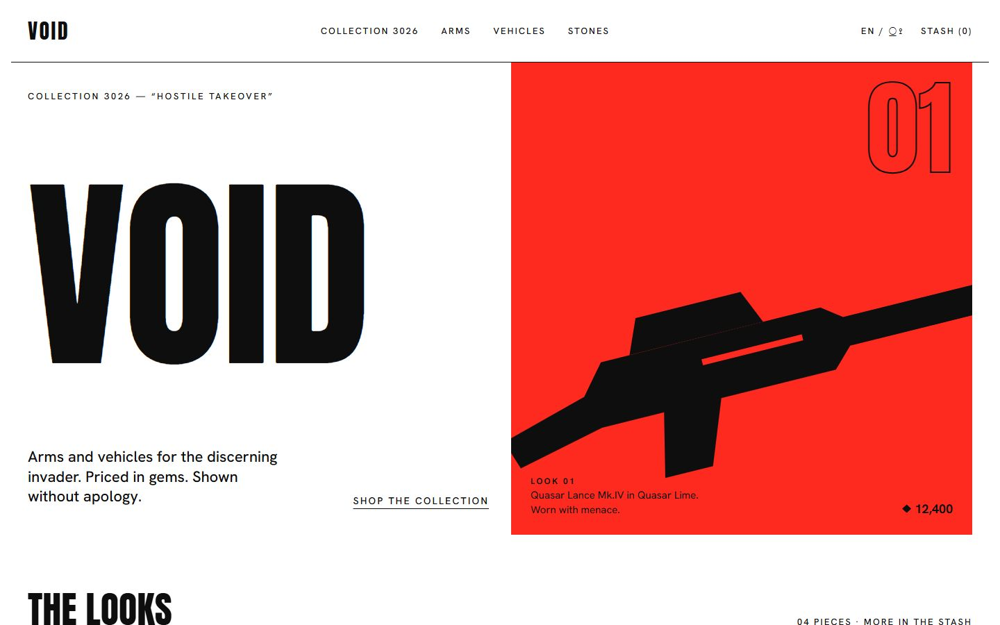
Hero 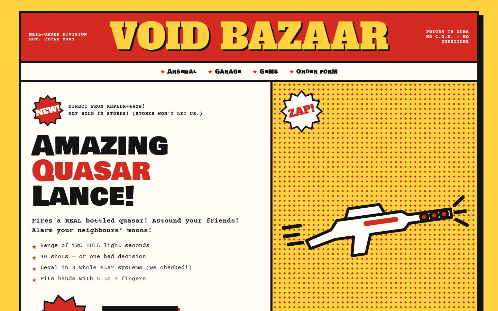
One of eight: pulp mail-order A new subject
Drinks instead of weapons: a shop that is also an encyclopedia, organised by country, category and whether a drink contains alcohol. Oatly’s lookbook set the tone; the design had to be its own.
Quench, editorial
“The whole world, poured.”
Studio photos and drawings working together, one colour per category and a zero-proof switch. It read well, but it felt like a magazine, not a shop you could step into.
- Studio photo recipe
- Category colours
- Zero-proof
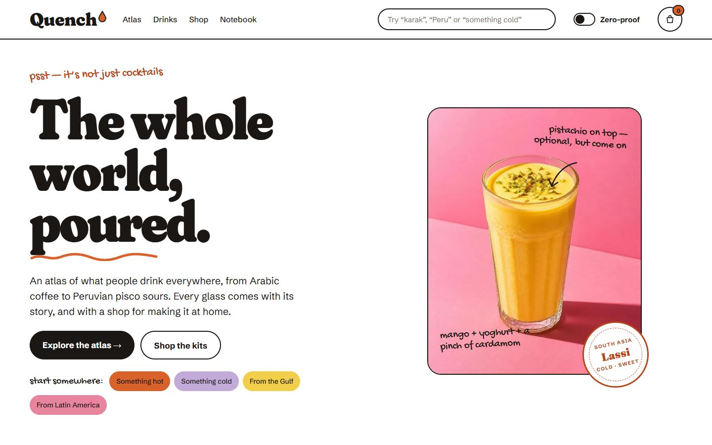
Hero 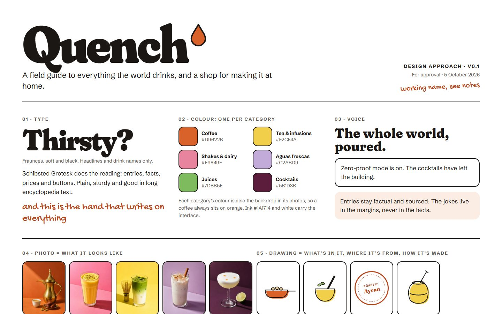
The approach board Two immersive directions
A: every drink is a full-screen colour room you can take apart. B: a night map leads to market stalls and a passport. Both used the same drinks.
- Take it apart
- Night map
- Passport
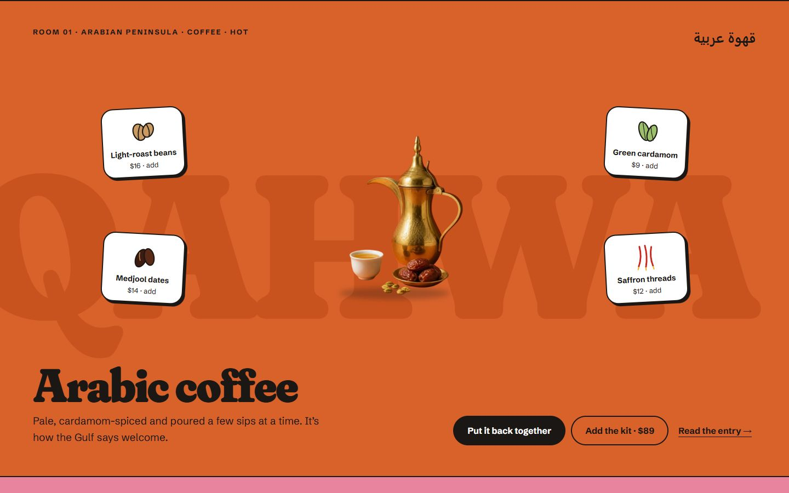
Hero 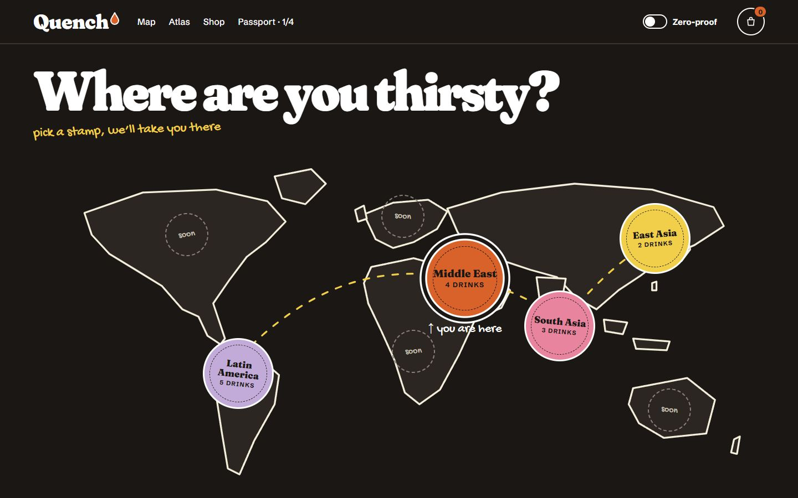
Direction B: the map The final direction
Rooms for the home and drink pages, the map and passport for getting around, markets in place of browsing, and the filters kept as the practical layer behind them. Phone layouts and a hand-off board followed.
- Front and back of house
- Phone layouts
- Hand-off board
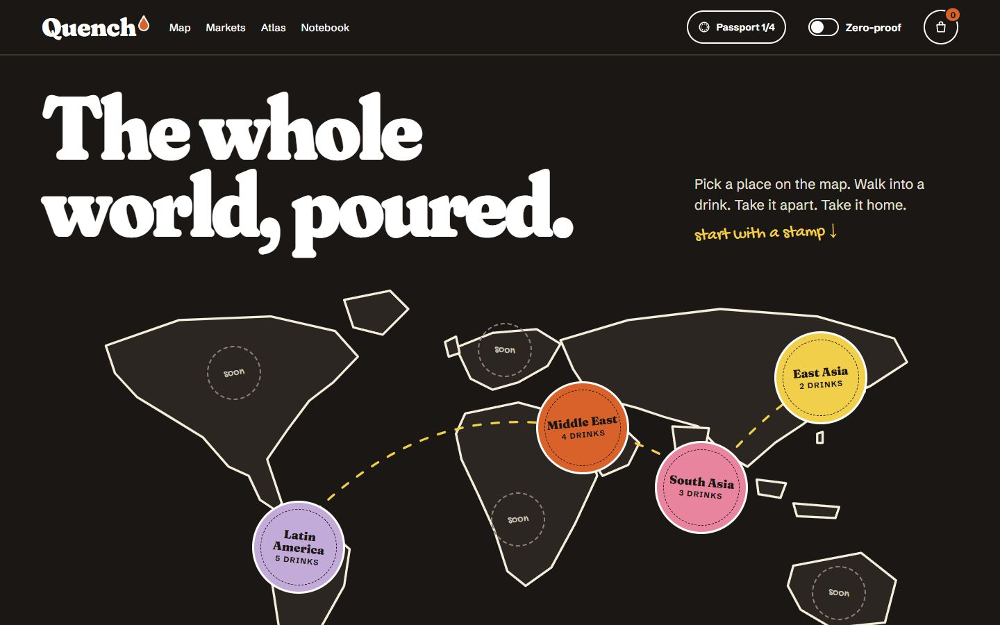
Hero 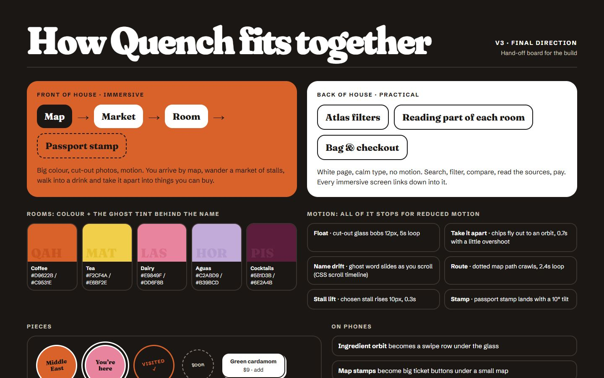
The hand-off board Built
“The whole world, poured.”
The working site: 22 pages, fourteen drinks with studio photos, four markets, the Atlas filters and a checkout.
- 14 drink rooms
- 4 markets
- Atlas filters
- Bag and checkout
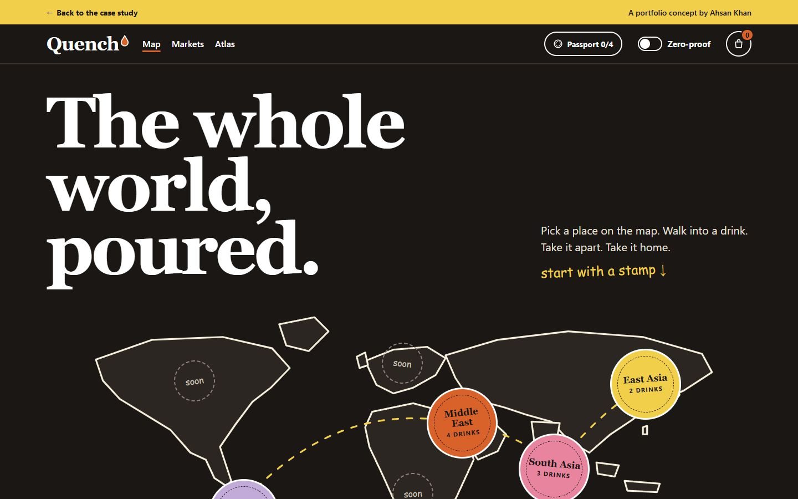
Hero 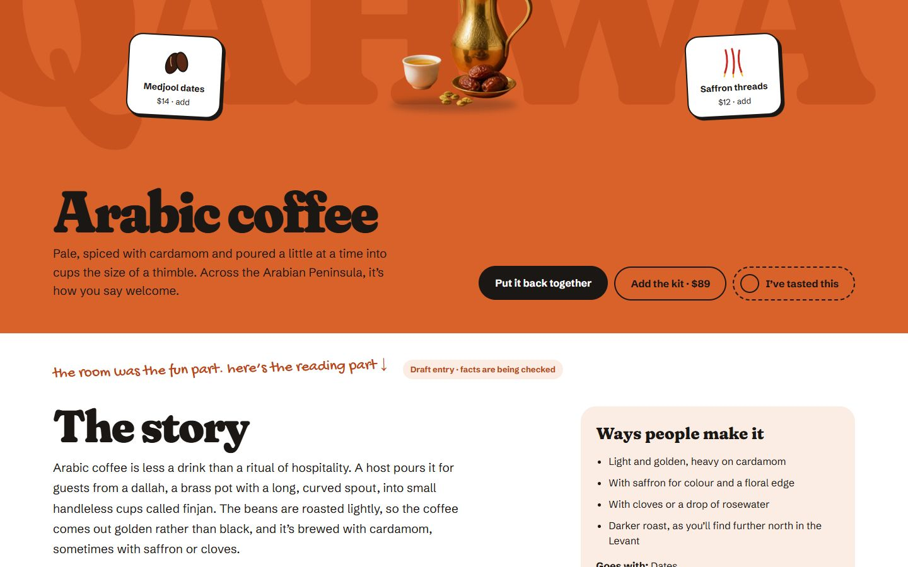
Taken apart: every ingredient can go in the bag Restocked
Thirty-three more drinks with studio photos, and Europe, Africa, North America and Oceania in place of the “soon” stamps. Three new categories (sodas and ferments, hot chocolate, and wine, beer and sake), new ingredient drawings, and a faster first visit: the fonts now come with the site instead of from a second server.
- 47 drink rooms
- 8 markets
- 3 new categories
- Faster first load

Hero 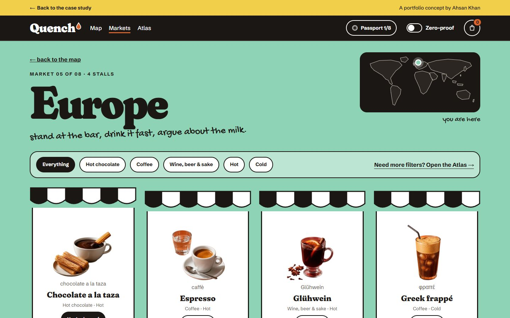
One of the four new markets: Europe
The result
An encyclopedia you can feel and a shop you can use.
Quench turns browsing into travelling and reading into shopping: every drink opens into the things you need to make it, and the practical tools stay one step behind. No sales, conversion or business outcome is claimed.
The breakthrough was splitting the site in two: immersive where people explore, plain where they decide and pay.
Try it yourself
Three things to do on the live demo. Your bag and passport stay in your browser.
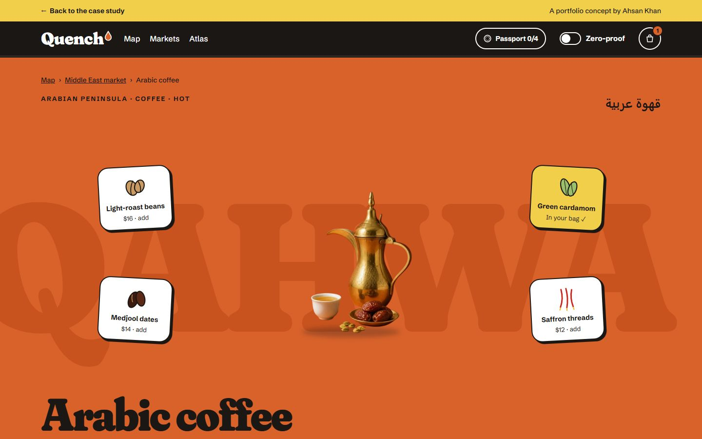
Take a drink apartOpen Arabic coffee and press “Take it apart”. Each ingredient comes out with a price, and any of them can go in your bag.Open Arabic coffee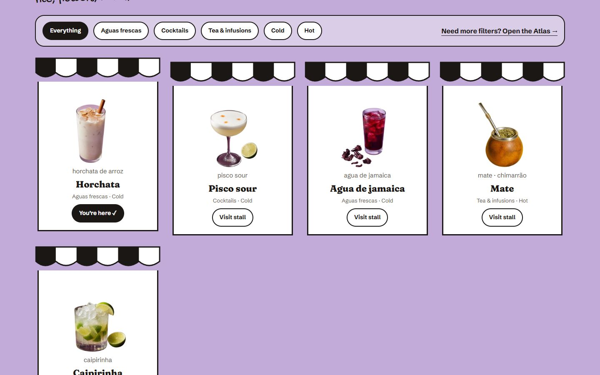
Travel by mapPick a stamp on the map to visit a market, then visit a stall. Every market you open is stamped in your passport.Visit a market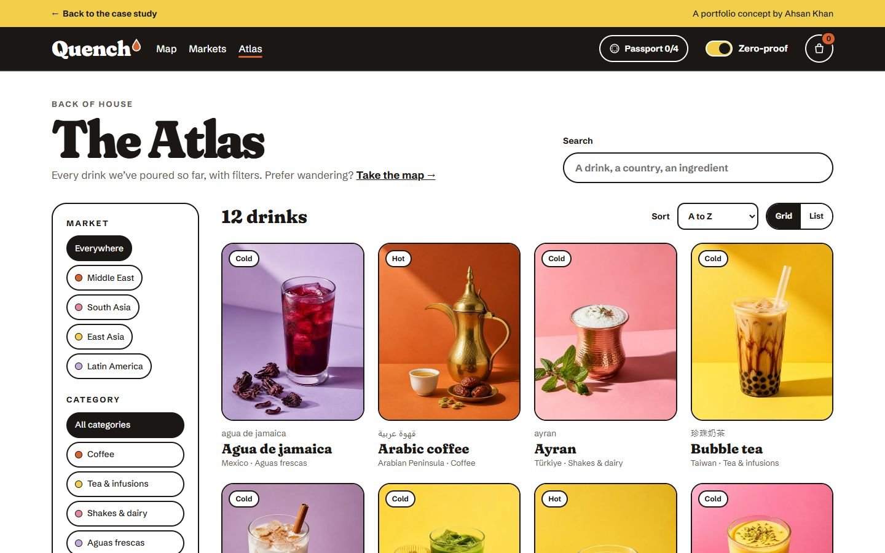
Go zero-proofSwitch on zero-proof in the header. Cocktails, wine and sake leave every page, and the homepage swaps in an alcohol-free room.Open the Atlas
See it live
The finished Quench site is live.
hosted on this portfolio · /demos/quench
Ahsan Khan: concept, direction and review at every version. Drink photos made in Canva.
Quench is a fictional portfolio concept, not a real shop or commissioned client work. Nothing is sold or shipped, prices are illustrative and every drink entry is a draft until its facts are checked. No sales or business outcome is claimed.